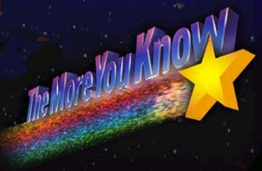
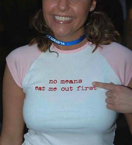
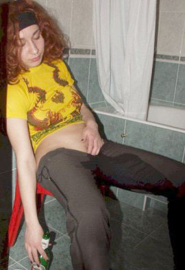
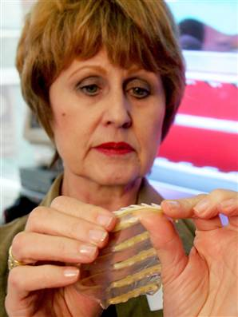
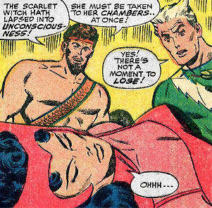

|
 Date RapeIt's not looking good: American standards dictating what passes for beauty in a prospective mate have reached their lowest point in decades. In December of 2005, the NPD Group, a marketing and information aggregation service reported that 76% percent of surveyed Americans confirmed that being overweight is not only completely acceptable, but downright sexy as well. Meanwhile, pale doughy clumps of trashy amateur "models" with droopy ice cream cone tits bark themselves hoarse from the pages of pornographic web sites. Every available square inch of formerly-fuckable female real estate seems overinked with hideous clip art more closely resembling a random smattering of haphazardly-affixed Chiquita banana stickers than the agenda of a kick-ass alternative rock star. The only individuals more battered, chapped and molestered than today's women are the men. Unable to grow into their own wispy moustaches, they live among five or six roommates in cramped, unhygienic apartments which serve only to lampoon their fading dreams of one day attending Burning Man on the moon. Straight and gay alike! Since when did it become okay for homosexualistic twentysomethings to leave their big-ass balls unshaved and grow out scruffy, uneven sideburns? Everyone in town is ugly and gross, expectations for beauty and brains have been completely exhausted by an ever more diverse and accepting amalgamation of hideous culture, which means there's never been a better time in American history for the average shitheel schmuckleberry to go out there and just get laid. But it's important to recognize an unseen portion of this population: those individuals among us who cannot -- for whatever reason -- establish a situation where relaxed nudity and subsequent intercourse occur naturally and without force. The mentally retarded, the handicapped, those incapable of delivering easy-breezy pick up lines on cue, people who are too shy or inexperienced to meet women, and angry shell-shocked Bible Belt veterans returning home from the war in Iraq, to name just a few. All these people have a right to know exactly what their dating options are, and what exactly they've been missing. If rape is traditionally about power, then date rape is all about sex -- the sooner the better please, and not so much with the chitty-chatter. Date rape in America raises a number of ethical questions. Since it's technically a "date," are you still obligated to pay for dinner when the intercourse is guaranteed? It's a thorny issue. Historically, women have stopped date rape dead its tracks simply by uttering the magical three-letter code word known as "yes". Let's go back in time. Two noteworthy instances in our nation's very own Holy Bible cite perhaps the earliest cultural attitudes toward date rape. In Genesis 39:15, Joseph (of Technicolor Dreamcoat fame) is sent to prison on a false charge of attempted rape brought about by Potiphar's wife: She kept his cloak beside her until his master came home. Then she told him this story: "That Hebrew slave you brought us came to me to make sport of me. But as soon as I screamed for help, he left his cloak beside me and ran out of the house." In Genesis 9:20-27, Noah (as in Noah's Ark) gets drunk, passes out, and is sexually molested by his son Ham: Noah, a man of the soil, proceeded to plant a vineyard. When he drank some of its wine, he became drunk and lay uncovered inside his tent. Ham, the father of Canaan, saw his father's nakedness and told his two brothers outside. But Shem and Japheth took a garment and laid it across their shoulders; then they walked in backward and covered their father's nakedness. Their faces were turned the other way so that they would not see their father's nakedness. When Noah awoke from his wine and found out what his youngest son had done to him, he said, "Cursed be Canaan! The lowest of slaves will he be to his brothers." Date rape's come a long way, baby. In A Natural History of Rape: Biological Bases of Sexual Coercion first published by MIT in 2000, scientist Randy Thornhill and anthropologist Craig T. Palmer elocuted a case for rape as a logical extension of human evolution. The impulse to rape remains a fixed part of the male mental psyche, strong enough to survive for thousands of years despite strong social sanctions and legal penalties. The paper first challenges the notion that "rape isn't about sex," by reminding readers that working, functional boners must be present for forced sex to occur. They observe that rape is a "symptom of an unhealthy society in which men fear and disrespect women". Maybe once their editor changes fear to dislike, it'll be off to the Pulitzers! Thornhill and Palmer based a portion of their rape studies on the scorpion fly. Male flies are equipped with a hooked appendage which serves a singular purpose: it seizes firmly around the female's forewings to prevent her escape during involuntary mating. This sharp raping clamp is Plan B -- a backup strategy easily employed in case the female rejects courting bribes like smaller dead insects. These days, reverse clamping technology promoting an anti-rape agenda is being pioneered in South Africa, where close to 50,000 rapes -- date and otherwise -- are reported each year. In 2005, inventor Sonette Ehlers unveiled the Rapex condom, which women can conceal snugly in their vaginas (or rear ends) as they might a tampon (or butt plug). The device, made of 100% latex, is designed to pierce and snap around curious, intrusive penises with an battery of sharp, hook-like barbs. When the device takes hold, the rapist "will obviously be too pre-occupied," Ehlers told a group of reporters near Cape Town. "I promise you he is going to be too sore. He will go straight to hospital." In fact, the array of spears can only be removed from the penis through immediate surgery, effectively alerting hospital staff and police to the rapist's crime. Critics of the Rapex condom insist the device is medieval and barbaric, and only increases the chance of violence against women. If a rape victim is cloaked with such a device, and she does mousetrap-clamp a midnight attacker -- he's likely to grow twice as enraged and deliver an extra bonus beating to the woman who wears it. "This is not about vengeance," the inventor stated in a press conference. "The deed, that is what I hate." Yes gentlemen, sometimes there are teeth down there. Let's not forget that there might be legitimate, real world reasons why you've got no game with the ladies. If you're physically handicapped, largely immobile or otherwise unable to overpower a female attendant due to a lack of upper body strength, date rape drugs might be just your ticket up the flagpole and down a back alley. Today, the three most popular date rape drugs are GHB, Rohypnol, and Ketamine. Fun Fact! GHB, a.k.a. gamma-hydroxybutyrate is a Schedule I drug under the U.S. Department of Justice Controlled Substances Act. There are a total of five Schedules (classifications) of drugs, which means GHB exists in the "most aggressively prosecuted" category, best defined by three criteria: (1) it has a high potential for abuse, (2) there is no associated medical purpose for it to exist, and (3) there are commonly agreed upon health risks. Schedule I drugs are therefore not wholly unlike every snack food, cola beverage and leisure product ever manufactured anywhere in the world since the beginning of time. For the most part, GHB serves as a sedative -- a powerful depressant to a gal's central nervous system. In controlled doses, it can even be effective as a general anesthetic. But try telling that to federal, state, and local law enforcement personnel in every region of the United States, who recognize GHB as the substance most commonly used in drug-facilitated sexual assaults. Like freshly squirted ejaculate, GHB tastes kinda salty, so it's best served secretively mixed into your victim's strawberry blended margarita. There, it can be rapidly absorbed and metabolized into her luscious circulatory and nervous systems. Who among us is the most likely to slip GHB into your beverage? According to statistics: white frat boys. Rohypnol (flunitrazepam benzodiazepine) is like an Italian mobster who encourages you to "forget about it". Manufactured primarily by the Hoffman-LaRoche pharmaceutical firm (ostensibly for the short-term treatment of sleeping disorders), it really is the Holy Grail of date rape vehicles -- the much sought-after roofie. It's tasteless, odorless, and quick to dissolve. Correct doses of the drug can result in more unaccounted-for lost time than a poking, probing UFO abduction. Widely available in Europe, Mexico and Colombia, roofies can be mixed with a drink, snorted, or injected. Hey gals: anyone wanna sign up for a backpacking tour of Central America? Seriously, let's all go together, my treat. The street value of a single roofie (according to the White House) is less than five dollars. These days, it's important to combine roofies with juice, fruit punch or a multi-colored tropical drink capable of concealing the blue dye commonly associated with the drug. It serves as an immediate remedy for depression or anxiety, and produces a stimulating high within the first fifteen to twenty minutes of ingestion. What follows is a reduction in responsiveness, a lack of psychomotor performance and very relaxed muscles. Let's lower those swinging arms, ladies. Lower. Lower. Down they go. Unclench those fists and be a lover, not a fighter. How ya doin' there. Good girl. Ketamine hydrochloride -- perhaps the most special of K's -- is a Schedule III dissociative psychedelic used by veterinarians as an injective intramuscular anesthetic. Ketamine is able to block nerve paths without restricting one's ability to circulate blood or breathe properly. First synthesized by the American Parke Davis Lab in 1962 as an alternative to PCP, the patent rights to Ketamine are actually held by the country of Belgium. As it spread across Europe and throughout the world, it quickly gained a reputation as a knock-em-out courtship drug, and was made illegal in the United States in August of 1999. Interestingly enough, weak doses of Ketamine are still widely available in topical lotions for use with chronic pain. If ordering "roofies" off the Internet strikes you as distasteful or complicated, or date rape pills are difficult to come by in your social circle, consider instead cheaper over-the-counter alternatives like wine coolers or spirited spritzers. Alcohol is universally agreed upon by pharmacists and frat boys alike as the number one date rape tool ever manufactured. Booze, in all its many forms, performs three basic tasks essential to the big score: it decreases a woman's ability to think clearly, it reduces her ability to make good judgments, and it drastically limits her ability to protect her chastity. Most importantly, in large doses it can cause black-outs and memory loss, two key ingredients to a successful date rape. Perhaps the Internet poetess known only as ~MKP~ said it best in her impassioned libretto I Thought Not Me: Rape on a date Why, she could have been serenading nineteen year old Nicholas Lumley of Brevard County, Florida. He's the enterprising nineteen year old who, in January of 2005, managed to get a fifteen-year-old so intoxicated she rendered herself unconscious several times in a row. Once she was properly drunk and date-rapeable, three of his friends watched and videotaped a number of naked, sexual to-dos between her and the assailant. And she never would have found out, had he not sidled up next to her and said, "You know, I had sex with you and I videotaped it." D'oh! And what's the deal with all these date rape allegations coming out of Florida? I'm talking to you, William Kennedy Smith, Norwegian rocker Roger Tiegs, and Marlins baseball player Ramon Castro! No wonder Miami Beach is such a great place to retire. Maybe next time, Lumley's victims will think twice about setting their alcoholic beverages down directly on the counter top without using a coaster. Seriously! The Drink Safe Sales company, under the guidance of Dr. Brian Glover (actually a dentist who dabbles in chemistry) has invented the Personal Date Rape Drug Testing Kit. This portable pocketbook laboratory is cleverly disguised as a rectangular cardboard coaster, about the size of a credit card. Embedded are space-age chemical test strips which react with a visible color change whenever they come into contact with an alcoholic drink spiked with date rape drugs. If they turn dark blue, congratulations! You're about to be date raped. And hey now: is date rape something you might want your corporation inexorably associated with? Using the Drink Safe Sales Quark Xpress printing template, you can order custom-made Date Rape Coasters with your own company logo and personal message. Minimum order: 10,000 units at fifty cents apiece. So whether you're raping a date for the very first time -- or just on a date getting date raped for the very first time -- try not to ruin it for the rest of us by confessing to your youthful indiscretions. Come on, America: get out there and buy that special someone a drink. You'll be glad you did. Surely there must be one woman at a tavern near you who's so ugly and bored that she's slipping herself roofies, but you'll never know if you're too scared to leave your computer. |